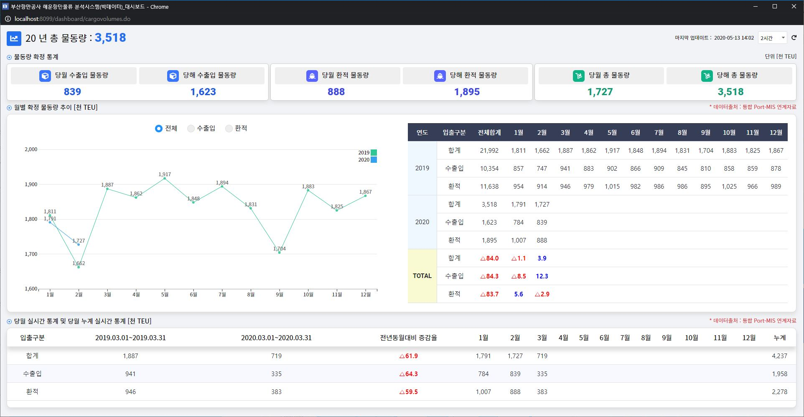

해운항만물류 BI 및 재난안전시스템 구축 사업 대시보드 개발
과제요약
과제 기간 : 2020.01.20 ~ 2020.05.21
주요기술 : Spring, Java, jQuery
주요기능 : 부산항만공사의 빅데이터 분석을 위한 해운항만물류 분석 시스템 웹페이지 리뉴얼 작업 수행(https://www.chainportal.co.kr/bigdata/cmm/main/openMain.do)
수행업무
부산항만공사의 기존 데이터베이스를 분석하여 분석 시스템에 활용 가능한 서비스 시나리오 도출 및 데이터 모니터링을 위한 대시보드 개발 데이터 로딩 시간 감소를 위한 SQL 쿼리 튜닝 작업, 모니터링용 차트(바 차트, 도넛 차트 등) 다양화 등의 작업 수행 담당업무 : 모니터링 대시보드 개발(차트 개발, 데이터 엑셀 다운)
ScreenShot

